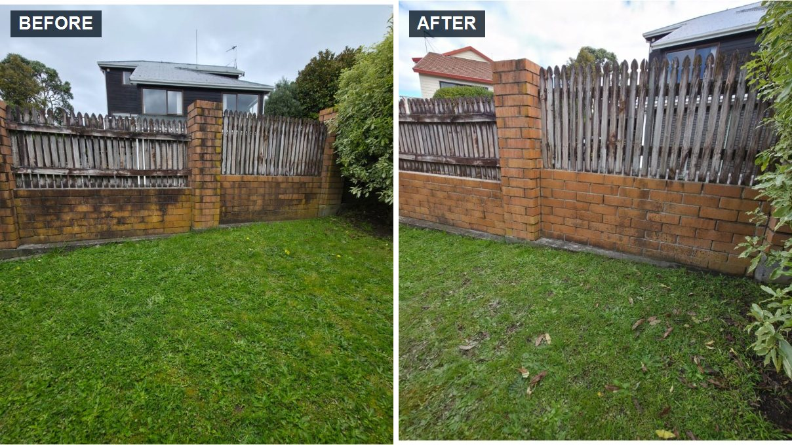

Before & after photo report
Every job finishes with a photo report emailed to you, so you can see exactly what changed.
Timber, Colorbond, vinyl and masonry all need different care. We match a gentle method to your fence, remove moss, algae and mould, and send you a photo report of the result.
Priced by length and height Free quote Get your free quote Your price depends on the fence length, height, material and level of growth.
Fences sit in the weather all year. Moss, algae, mould and dirt turn them green, black or grey, and can break down paint and timber. A gentle clean restores the look and gives you a fresh surface to paint or stain.
We clean home, commercial and strata fences and boundary walls across Auckland.
If you notice any of these, your fence is probably overdue.
Here's what you get with XTERA that you won't always get elsewhere.
Every job finishes with a photo report emailed to you, so you can see exactly what changed.
A gentle method that protects paint, stain and timber, rather than blasting the surface and leaving damage behind.
Timber, Colorbond, vinyl and masonry each get the method that suits them.
Treatment that breaks down growth, not just a quick rinse over the top.
Timber looks fresher once dirt and surface growth are cleaned away. We'll be upfront about worn timber.
Where both sides of the fence are accessible, we clean both, so it looks good from your side and the neighbour's.
A clean, mould-free surface gives paint or stain a better base to bond to.
Plants, gardens and neighbouring properties are protected while we work.
Eco-friendly detergents that are effective on growth and gentler on your garden.
Not happy with the result within 10 days? Let us know and we'll come back and re-clean the affected areas.
Review your job summary and accept the terms online through a secure link. No paperwork.
Weekend appointments available for busy households and businesses.
Trained technicians who know which methods suit which fence.
A simple, transparent process, so you always know what's happening.
Tell us about your fence and we'll provide a free, clear quote.
We check the material, condition and level of growth, and choose the method.
Plants, gardens and neighbouring properties are protected before we begin.
Low-pressure wash with a treatment to remove moss, algae and mould.
Final rinse and inspection, then your before and after photo report by email.
Different materials need different care. Tell us what yours is made of and we'll plan the method to suit it.
Brick, timber and everything in between, cleaned gently so the surface is protected. After every clean you get a before and after photo report, plus our 10 day clean guarantee.
Request a quoteGet the whole exterior fresh in one visit. Ask us to include any of these when you request your quote.
Driveways, paths and paving cleaned to match your fresh fence.
Learn moreWalls and cladding cleaned to match your freshly cleaned fence.
Learn moreSoft wash roof cleaning with moss, lichen and algae treatment.
Learn moreStreak-free window cleaning, including frames, sills and tracks.
Learn moreMoss and mould return, especially on shaded and damp fences. A regular clean keeps your fence fresh and each visit easier.
We service homes and commercial properties right across Auckland, including:
Tell us about your fence and we'll send you a clear, free quote based on its length, height and material.